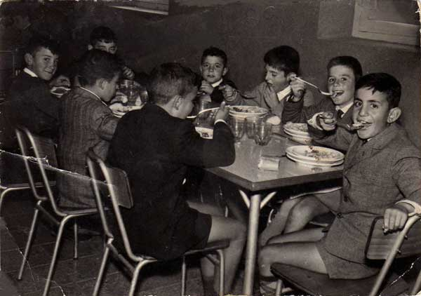

Tenemos al fondo a la izquierda, a Angel González Alvarez "Tocino", J. M. Román Baldellón, José Fernández Iglesias, Espino (yo), Gabriel, Paulino Muñoz Martínez, Joaquín Amat Molina y J.A. Pereda Martínez, que solo se le veel pelo y los ojos.
 |
CERRAR